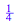
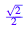

e:=matrix([[-6,0],[0,1]])
a:=matrix([[-1,-2,5,-1],[3,-6,-6,-6]])
e*a
8/4

1/4

(3*sqrt(2))-sqrt(2)
(-4*sqrt(2))+sqrt(2)
(-4*sqrt(2))+(4*sqrt(2))

4*((-3*sqrt(2))/(13*sqrt(2)))
1-(12/13)
inverse(matrix([[sqrt(2),3*sqrt(2),0],[-4*sqrt(2),sqrt(2),0],[0,0,1]]))
simplify(%)
![matrix([[2^(1/2)/26, -(3*2^(1/2))/26, 0], [(2*2^(1/2))/13, 2^(1/2)/26, 0], [0, 0, 1]])](section-01-5-elementary-matrices-and-a-method-for-finding-inverse-of-a_images/math11.png)
(1/13)*(1/sqrt(2))
(1/sqrt(2))

inverse(matrix([[2,-4,0,0],[1,2,12,0],[0,0,2,0],[0,-1,-4,-5]]))
inverse(matrix([[-8,17,2,1/3],[4,0,2/5,-9],[0,0,0,0],[-1,13,4,2]]))

inverse(matrix([[0,0,2,0],[1,0,0,1],[0,-1,3,0],[2,1,5,-3]]))